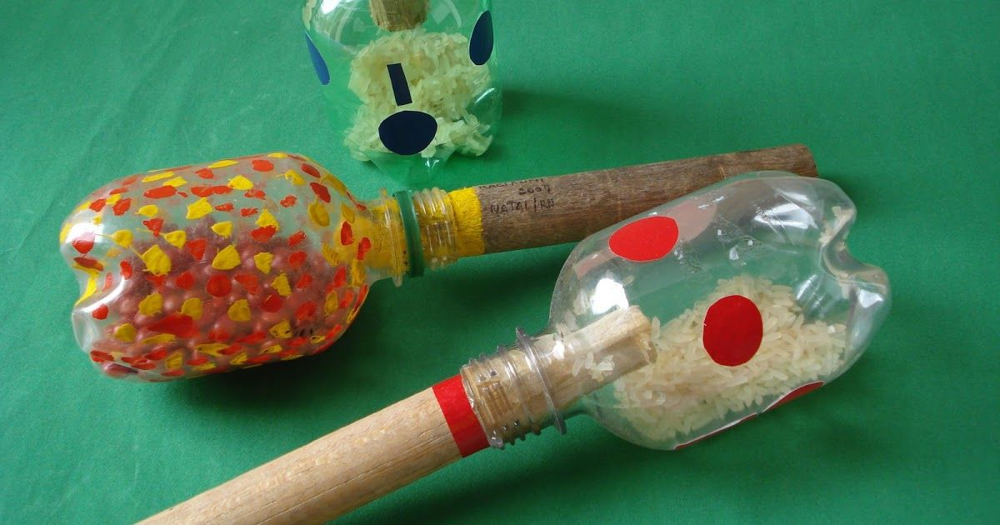
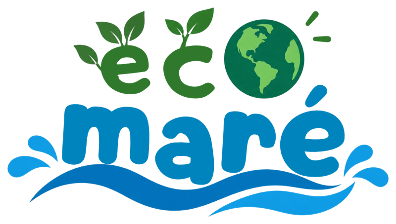

Leve seu lixo embora
Brincou, comeu, lanchou? Guarde o lixinho na mochila e jogue na lixeira quando sair da praia.
Olha só que fácil! Quem cuida da praia protege o mar e os bichinhos.
Brincou, comeu, lanchou? Guarde o lixinho na mochila e jogue na lixeira quando sair da praia.
A vegetação da praia, chamada restinga, segura a areia. Passe só pelos caminhos marcados.
Caranguejos, tartarugas e aves moram ali. Olhe de longe, sem pegar e sem Aperrear.
Use garrafinha e sacola que dá pra usar de novo. Canudo e copo descartável vão parar no mar!
Vidro, lata e coisas estranhas podem machucar. Peça ajuda para um adulto recolher.
Ensine a sua família e seus amigos o que você aprendeu. Todo mundo junto faz a diferença!
Cada lixo tem a sua lixeira colorida. Clique na lixeira certa para o item que aparecer!
Escolha uma lixeira!
Em vez de jogar fora, vamos transformar! Clique no brinquedo para ver o que precisa e o passo a passo. Marque cada passo que você já fez.
⚠️ Cortar e furar é sempre com a ajuda de um adulto, combinado?
Flutua de verdade! Teste na bacia ou no tanque.
Derrube os peixinhos e os caranguejos com a bola de meia.

Fale baixinho num copo e seu amigo escuta no outro.

Um chocalho para fazer a festa e tocar no ritmo do mar.
Clique no botão para descobrir uma curiosidade sobre o mar!
Escreva o seu nome e receba o certificado de quem promete cuidar do mar.

Certificado de Guardião da Praia
prometeu levar o lixo embora, não pisar nas plantinhas da restinga, respeitar os bichinhos e ensinar os amigos a cuidar da praia.
Eco Maré — O futuro dos oceanos começa na praia.